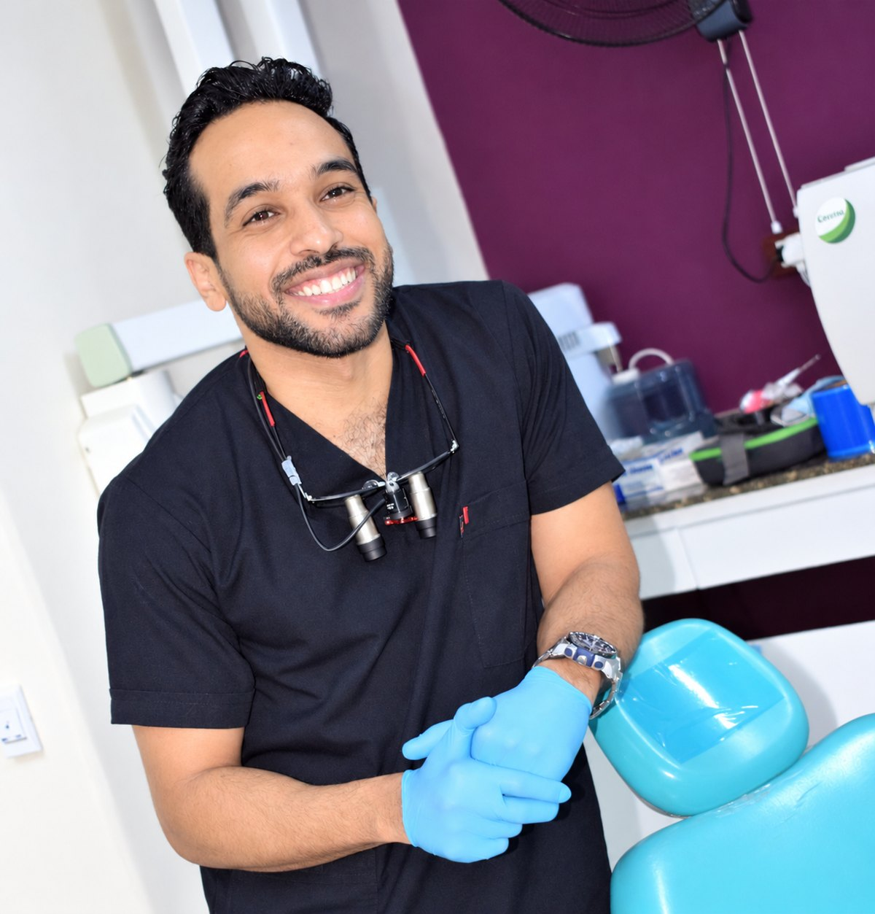
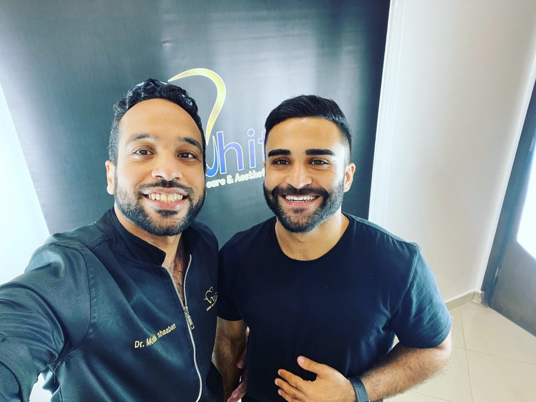
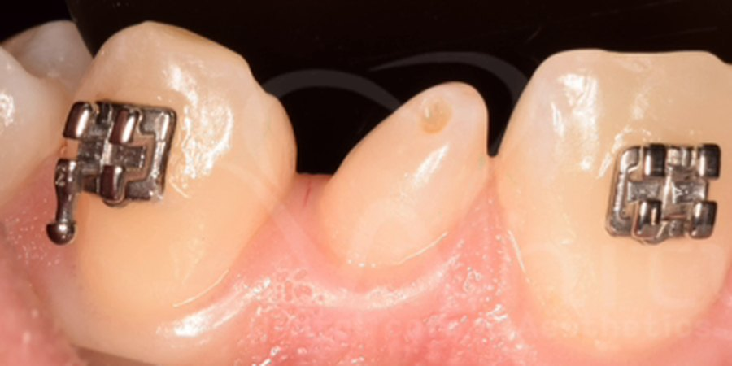

طب الأسنان التجميلي والعام · الدهار، الغردقة
طبيب أسنانك في الغردقة، سواء كنت مقيماً أو في إجازة.
ألم مفاجئ في أسنانك أثناء الرحلة، أو ابتسامة جديدة تخطط لها مع إجازتك. راسل فريق د. مصطفى شعبان على واتساب واحصل على موعدك بدون استمارات أو انتظار.

خدماتنا
اضغط على الخدمة لتسأل عنها. ستحصل على رد شخصي وتكلفة تناسب حالتك، لا قائمة أسعار عامة.


قادم إلى الغردقة؟ خطط لعلاجك قبل السفر.
معظم التخطيط يتم عبر واتساب، لتبقى أيامك هنا إجازة.
أرسل رسالة
أخبرنا بما تحتاجه. صورة لابتسامتك أو أشعة حديثة تساعدنا.
استلم الخطة والتكلفة
يرد عليك د. مصطفى بالخيارات وعدد الزيارات والتكلفة.
مواعيد تناسب إقامتك
نرتب مواعيدك حسب تاريخ وصولك ومغادرتك، ويمكننا أيضاً المساعدة في التوصيل.
ألم أو كسر في السن أثناء الإجازة؟
راسلنا بمكان الألم واسم فندقك، وسنعطيك أقرب موعد متاح.

طبيبك
د. مصطفى شعبان
مؤسس مركز وايتي باي الرقمي لطب الأسنان، ومتخصص في تجميل وتقويم الأسنان، بخبرة 13 عاماً وأكثر من 4700 حالة تم علاجها.
- أول طبيب تقويم معتمد للتقويم الشفاف في الغردقة
- عضو الأكاديمية الأمريكية لطب الأسنان التجميلي
- عضو MFDS · عضو هيئة قسم جراحة الوجه والفكين بجامعة 6 أكتوبر
- 530 دورة تدريبية، منها تصميم الابتسامة الرقمي والتقنيات الحديثة
من داخل العيادة
غرف علاج خاصة ومنطقة انتظار هادئة. تقع العيادة في وسط المدينة، بالدهار في شارع النصر.


مرضانا
من أهل الغردقة وزوارها مع د. مصطفى في العيادة.




نتائج حقيقية. اسحب للمقارنة.
صور من حالات د. مصطفى في وايتي باي.

 قبل
بعد
قبل
بعد

 قبل
بعد
قبل
بعد
نتائجنا بالفيديو
مقاطع قصيرة من العيادة. اضغط للمشاهدة على تيك توك.


تقييم 5 من 5 من 207 مريضاً
كل تقييم من مريض حجز وزار العيادة فعلاً عن طريق فيزيتا.
“It was my second visit to Doctor Moustafa.Last year it was first time,this year I back to the same doctor as he is and very friendly and professional, I more comfortable to visit this clinic than England. Very good service, very helpful & good advice regards my issue with teeth. … Very friendly staff at the clinic. Kind regards Justyna Dobrzynska”
“Brilliant dentist I would highly recommend,he is very understanding and explained well the procedure. His English is to a good level so are the practice staff. He also understood my extra needs due to other health issues”
“Really good service and prices”
أسئلة شائعة
هل تتحدثون الإنجليزية؟
نعم، يرد د. مصطفى والفريق بالعربية والإنجليزية، على واتساب وفي العيادة.
هل يمكن علاجي خلال إجازة مدتها أسبوع أو أسبوعان؟
غالباً نعم. التبييض والتنظيف والحشو وعلاج العصب تحتاج عادةً زيارة أو اثنتين. أما الفينير والتيجان والزراعة فتحتاج زيارات أكثر، لذا أرسل تواريخ إقامتك أولاً وسيخبرك د. مصطفى بما يناسبها.
كيف أعرف التكلفة قبل السفر؟
أرسل صورة لابتسامتك أو أشعة حديثة على واتساب، وستحصل على خطة علاج وتكلفة لحالتك.
ماذا أفعل إذا شعرت بألم في أسناني أثناء الإجازة؟
راسلنا على واتساب بمكان الألم واسم فندقك، وسنعطيك أقرب موعد متاح.
أين تقع العيادة؟
في وسط المدينة: شارع النصر بالدهار، الدور الثاني أعلى صيدلية عنبر. ويمكننا المساعدة في التوصيل.
كيف أحجز؟
عبر واتساب فقط. اضغط أي زر أخضر أو املأ النموذج القصير بالأسفل، وسنرد عليك بالموعد.
موقعنا في الدهار
شارع النصر، الدهار، الغردقة
الدور الثاني علوي، أعلى صيدلية عنبر
أمام خير زمان، بجوار بنك مصر
الكشف بحجز مسبق.